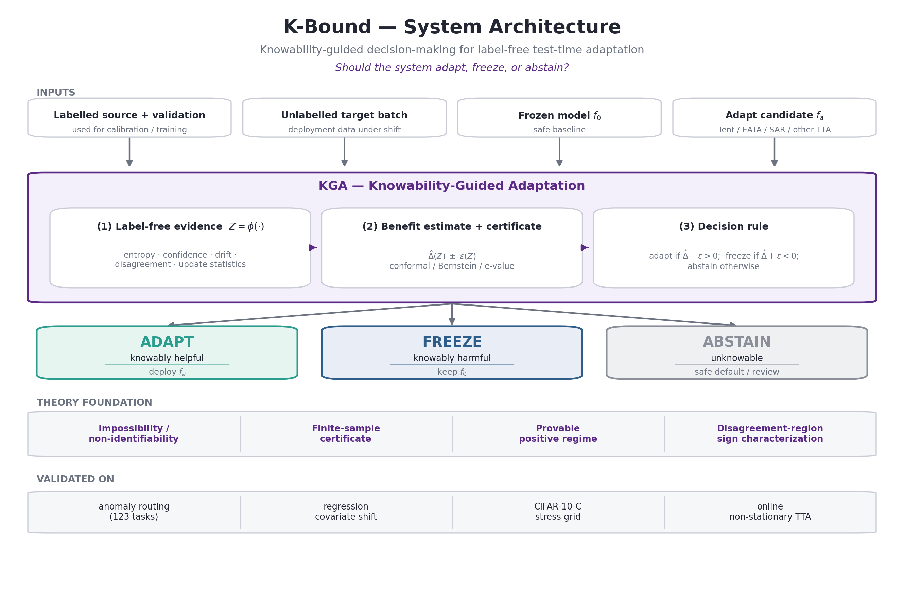

When is label-free adaptation knowable? Decide: adapt · freeze · abstain. Every number below is produced by a real run in experiments/kbound/results/; reproduce all with bash scripts/rebuild_kbound.sh.
| # | Theorem | Status | Evidence |
|---|---|---|---|
| 1 | Non-identifiability + Le Cam minimax (witness) | proved | witness_clean.json · 100% abstain, KS p>0.05 |
| 2 | Plug-in regret decomposition + minimax floor | proved | val_thm2_regret.py · identity to 1e-17 |
| 3 | Finite-sample certificate (false-adapt ≤ α) | conditional | switching_certificate.py (=T5) |
| 3b | Anytime-valid e-value certificate | proved | val_thm3_evalue.py · false-adapt 0.06≤α |
| 4 | Covariate-shift identifiability | proved | regression_covariate.json |
| 5 | Sign-of-difference on disagreement region (binary→multiclass→regression) | proved | val_thm5_multiclass.py · 100% sign / 4000 |
| — | Label-free bracketing (Conjecture 1) | open | reliability-model assumption |
ELARA stack T1–T9 + GDR (10/10 module + validator + artifact) underpins the fusion instantiation — see docs/research/kbound/THEOREM_CODE_STATUS.md.
| Experiment | frozen | always-adapt | K-Bound | oracle | verdict |
|---|---|---|---|---|---|
| Mixed regime (369 inst, AUROC) | 0.586 | 0.697 | 0.690 | 0.719 | beats freeze, ties adapt |
| Mixed regime — 8 seeds (mean) | 0.584 | 0.697 | 0.686 | 0.718 | t vs freeze p=7e-11 |
| Harmful fusion (elara_fuse, AUROC) | 0.748 | 0.728 | 0.748 | 0.750 | beats adapt (regret 11×↓) |
| CIFAR-10-C suite (65 cells, acc) | 0.412 | 0.626 | 0.626 | 0.629 | helpful-dominated; ties adapt |
| CIFAR-10-C + Tent (decisive run) | 0.671 | 0.786 | 0.793 | 0.794 | beats BOTH |
| Online continual-Tent (harsh, acc) | 0.440 | 0.339 | 0.426 | 0.630 | adapt collapses; KGA holds |
Regret-to-oracle (lower=better): mixed KGA 0.029 vs freeze 0.133; harmful KGA 0.0019 vs adapt 0.021; CIFAR-Tent KGA 0.0016 vs freeze 0.123, adapt 0.0086.
| Metric | value | meaning |
|---|---|---|
| Clean suite — adapt precision | 0.90 | when KGA adapts, it truly helps |
| Clean suite — abstain |Δ| vs acted |Δ| | 0.021 / 0.132 | abstains exactly where benefit ≈ 0 |
| Mixed regime — false-adapt rate | 0.065 | rarely adapts when it would hurt |
| Non-identifiability witness — abstain rate | 100% | identical Z-law, opposite truth → refuses |
| Regression covariate-shift | 0/11/61 | adapt/freeze/abstain → matches oracle MSE |

# full reproduction (CPU; ~2 min) + compile paper cd AutoML_Flagship_V8 PYTHON=.venv/bin/python bash scripts/rebuild_kbound.sh # add the GPU TTA experiments KBOUND_GPU=1 PYTHON=.venv/bin/python bash scripts/rebuild_kbound.sh # theorem validators (numerical checks) .venv/bin/python experiments/kbound/theory_validation/val_thm1_lecam.py # + thm2, thm3, thm5
Inputs: 123-task score archive (experiments/elara_u/score_archive) + CIFAR-10 cache. Outputs: experiments/kbound/results/*.json, docs/research/kbound/figures/*.png, K-Bound_paper.pdf.